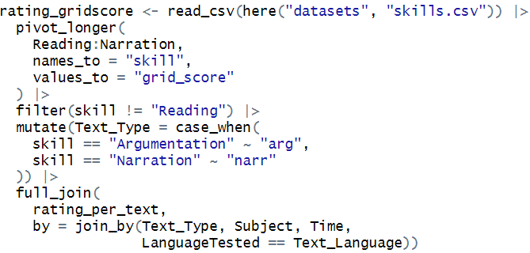
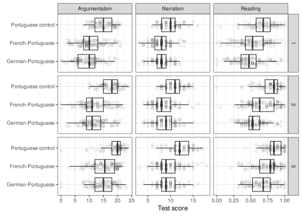
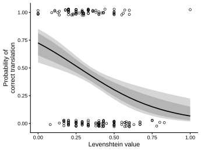
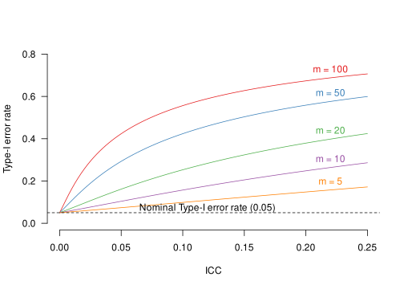
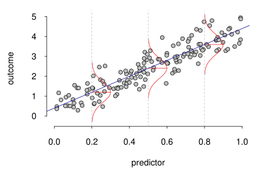

Kursangebote und Beratung
Wie schärft man eine Forschungsfrage? Wie plant man eine Studie, die sie beantwortet? Wie analysiert und präsentiert man die Daten – und wie liest man andere Forschungsberichte kritisch?
Diese Fragen begleiten meine Lehr- und Forschungstätigkeit seit über 15 Jahren. Als Sprachwissenschaftler mit einem BSc in Informatik, einem MSc in Statistik und Data Science und einer Promotion in angewandter Linguistik teile ich meine Erfahrung gerne durch Lehrveranstaltungen und persönliche Begleitung.
Folgende Angebote richten sich insbesondere an Studierende, Doktorierende und Forschende in den Geistes- und Sozialwissenschaften. Wichtig ist mir dabei stets das konzeptuelle Verständnis der Teilnehmenden und die Frage nach der Relevanz der Verfahren – und nicht einfach eine Datenanalyse nach Schema F.
Lehre und Beratung sind sowohl auf Englisch als auch auf Deutsch möglich. Lernmaterialien werden auf Englisch zur Verfügung gestellt.
Bei Interesse an einem Angebot, für zusätzliche Ideen oder für weitere Auskünfte schreiben Sie mir gerne unverbindlich unter janvanhove@gmail.com.
Kurse für Doktoratsprogramme und Winter und Summer Schools
Die Kurse vermitteln allgemeine Prinzipien, wie quantitative Daten aufbereitet und analysiert werden können. Diese Prinzipien sind sowohl für neue als auch für routinierte Forschende relevant. Sie werden in den Kursen anhand von Datensätzen illustriert, die ich den Teilnehmenden zur Verfügung stelle. Möchten Sie eigene Datensätze der Kursteilnehmenden analysieren, eignen sich die Formate Sprechstunden und Methoden- und Statistikberatung besser.
Arbeiten mit Datensätzen in R
Das Aufwendigste einer Datenanalyse ist oft, die Daten überhaupt in ein analysierbares Format zu bringen. In diesem Kurs lernen Teilnehmende, wie Datensätze sinnvoll organisiert werden können, wie man sie so umgestalten kann, dass sie in einem geeigneten Format vorliegen, wie man sie abfragt und zusammenfasst – und wie man Fehler bei der Dateneingabe auf den Grund geht. Hierfür arbeiten wir mit R und zwar hauptsächlich mit den Paketen aus dem tidyverse.

- Keine spezifischen Vorkenntnisse erforderlich.
- Inhalt:
- Datensätze aufbereiten, einlesen, abfragen, verknüpfen, zusammenfassen und umgestalten.
- Reproduzierbarkeit sicherstellen.
- Übung im Umgang mit inkonsistenten Daten.
- Format:
- 1 Termin à 4 Stunden mit Input, Beispielen und Denkaufgaben.
- Auf Wunsch 1 weiterer Termin an einem anderen Tag mit Übungen in R.
Datenvisualisierung in R
Ein Bild sagt bekanntlich mehr als 1’000 Worte, und eine gute Grafik mehr als zig Tabellen. In diesem Kurs lernen Teilnehmende, aussagekräftige Grafiken zu zeichnen, sodass sie selbst und ihre Leserschaft besser verstehen, wie nun die Daten eigentlich aussehen. Wir arbeiten hauptsächlich mit dem R-Paket ggplot2.

- Keine spezifischen Vorkenntnisse erforderlich, aber wenn die Teilnehmenden mit dem Inhalt des Kurses Arbeiten mit Datensätzen in R vertraut sind, vervielfachen sich die Möglichkeiten.
- Inhalt:
- Wieso Daten grafisch darstellen?
- Histogramme, Kerndichteschätzer, Boxplots, Dotplots, Streudiagramme, Trendlinien, Facetting.
- Format:
- 1 Termin à 4 Stunden mit Input, Beispielen und Denkaufgaben.
- Auf Wunsch 1 weiterer Termin an einem anderen Tag mit Übungen in R.
Modelle und Unsicherheit grafisch darstellen
Statistische Modelle sind öfters schwer durchsichtig. Ausserdem liefern sie Schätzungen, die nie exakt sind. Werden Modelle lediglich in Tabellen dargestellt, so sind Missverständnisse udn Fehlinterpretationen vorprogrammiert. Dieser Kurs zeigt daher, wie man Modelle und ihre Unsicherheit so visualisiert, dass die Ergebnisse sowohl für die Forschenden als auch für ihr Publikum besser verständlich sind.

- Etwas Erfahrung mit Regressionsanalyse ist wünschenswert.
- Inhalt:
- Punktschätzungen darstellen.
- Punktweise und simultane Konfidenzintervalle und Konfidenzbänder.
- Vorhersageintervalle und Vorhersagebänder.
- Bootstrapping.
- Einfache und multiple Regression.
- Interaktionen.
- Nichtlineare Effekte.
- Logistische Regression.
- Format:
- 1 Termin à 4 Stunden mit Input, Beispielen und Denkaufgaben.
- Auf Wunsch können zusätzliche Techniken aus dem Bereich des interpretable machine learning vorgestellt werden.
Design und Analyse von Experimenten mit intakten Gruppen
Viele Interventionsstudien in der angewandten Linguistik und den Bildungswissenschaften weisen statt einzelner Personen ganze Klassen oder Schulen den jeweiligen Konditionen zu. Wer diesen Umstand bei der Auswertung nicht berücksichtigt, kommt leicht zu viel zu optimistischen Schlussfolgerungen. Dieser Kurs erklärt, warum dies so ist und wie man Experimenten mit intakten Gruppen angemessen entwirft und analysiert.

- Etwas Erfahrung mit Signifikanztests wäre nützlich, ist aber nicht zwingend nötig.
- Inhalt:
- Randomisierung als Inferenzbasis.
- Exakte Signifikanztests und Annäherungen.
- Einfaktorielle, zweifaktorielle und gemischte Designs für intakte Gruppen.
- Designeffekt und Intraclass-Korrelation.
- Einfache und komplexere Auswertungsverfahren.
- Berücksichtigung von Kontrollvariablen.
- Format:
- 1 Termin à 4 Stunden mit Input, Beispielen und Denkaufgaben.
Das allgemeine lineare Modell
Das allgemeine lineare Modell ist das Arbeitspferd der quantitativen Datenanalyse. Geläufige Verfahren wie t-Tests, ANOVA (Varianzanalyse) und lineare Regression lassen sich alle als Erscheinungsformen dieses Modells verstehen, während andere Verfahren wie logistische Regression, gemischte Modelle und generalisierte additive Modelle Verallgemeinerungen des allgemeinen linearen Modells sind. Dieser Kurs befähigt die Teilnehmenden, zu verstehen, wie das allgemeine lineare Modell genau funktioniert und wie man seine Parameterschätzungen richtig interpretiert.

- Grundkenntnisse in deskriptiver Statistik (Mittel, Median, Varianz, Streudiagramm) werden vorausgesetzt.
- Inhalt:
- Modellgleichung.
- Optimierungskriterien und Parameterschätzung.
- Schätzung von Unsicherheit unter unterschiedlichen Annahmen (Bootstrapping, t-Verteilungen).
- Interpretation von Modellparametern, insbesondere bei multipler Regression.
- Modellierung von Interaktionen.
- Zusammenhang zwischen Regressionsanalyse, t-Tests, ANOVA und ANCOVA.
- Format:
- 5 oder 6 Termine à 3 Stunden mit Input, Beispielen, Denkaufgaben und Übungen in R. Im Idealfall sind diese Termine über einige Woche verteilt.
Semesterveranstaltungen für Studiengänge und Forschungsgruppen
Auch für Veranstaltungen, die über ein oder mehrere Semester verteilt sind, stehe ich nach Absprache gerne zur Verfügung.
Einführung in die Statistik
Diese Lehrveranstaltung vermittelt anhand von Beispielen aus der angewandten Linguistik und benachbarten Disziplinen, wie man quantitative Daten sinnvoll auswertet und interpretiert, ohne dabei in blinder Anwendung von Rezepten stecken zu bleiben.

- Für Anfängerinnen und Anfänger.
- Inhalt:
- Deskriptive Statistik.
- Stichproben und Schätzungen.
- Das allgemeine lineare Modell.
- Logik, Sinn und Unsinn von Signifikanztests.
- Format:
- Ein Semester lang wöchentlich.
- Zwei Semesterwochenstunden von insgesamt 90 Minuten mit Input.
- Ggf. eine Semesterwochenstunde (45 Minuten) Übungsbetrieb.
- Mit wöchentlichen Hausaufgaben.
- Veranstaltung von 3 bis 5 ECTS.
Lese- und Diskussionsgruppe
Viele statistische Konzepte werden im Studium oder im Selbststudium nur oberflächlich verstanden: Man weiss zwar, wie man ein Verfahren anwendet, aber nicht wirklich, was es genau macht, wann es trügt und ob es überhaupt etwas bringt. Eine Lese- und Diskussionsgruppe bietet Forschenden und Doktorierenden die Möglichkeit, solche Lücken in einem informellen, kollegialen Rahmen zu schliessen.
- Für Teilnehmende mit statistischen Grundkenntnissen.
- Die Themen können in Rücksprache mit der Organisation und den Teilnehmenden gewählt werden. Ich stelle aber auch gerne selber ein Leseprogramm zusammen (Beispiel).
- Es wird erwartet, dass die Teilnehmenden die Lektüre vorbereiten.
- Wöchentlich oder zweiwöchentlich.
Individuelle Unterstützung
Sprechstunden an Ihrer Institution
Dank Sprechstunden vor Ort an Ihrer Institution (z.B. drei Stunden alle zwei Wochen) können Forschende, Studierende und andere Mitarbeitende individuell oder in kleinen Gruppen unkompliziert Rat und Feedback einholen, egal ob zum Studiendesign, zur Auswertung oder zur Darstellung der Ergebnisse.
Beratung und Datenanalyse
Wenn Sie punktuell individuelle Methoden- oder Statistikberatung suchen oder mich für die Datenanalyse Ihres Projektes in Anspruch nehmen möchten, so stehe ich auch auf Stundenbasis zur Verfügung.